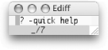
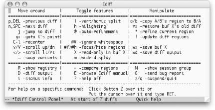
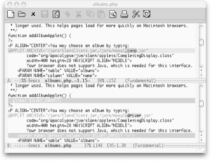

|
|
< Day Day Up > |
|
12.13. Comparing with EdiffIn working with any version control system, you sometimes want to compare different revisions of a file. Often you're interested in what's changed in the current working revision, but sometimes you're after more historical information. The most challenging situation arises when an optimistic strategy like CVS is proved wrong, and you need to merge incompatible changes made by multiple developers to the same section of a file. We've already described vc-diff, VC's built-in facility for helping with these tasks. We would be remiss, however, if we did not introduce you to Ediff, an even more powerful facility that is available in current releases of GNU Emacs. Ediff is extremely rich; it almost feels like another program that "takes over" your Emacs session for a while. Full coverage would require an entire chapter, or perhaps even its own handbook, but this introduction will get you started and point you at the built-in manual if you want to delve deeper. 12.13.1 Starting EdiffFor the most part, you launch Ediff as an independent entity rather than having it invoked automatically by the version control interface. The exception (as mentioned above) is if you ask Emacs for help resolving conflicts when they occur during a check-in operation or manually invoke vc-resolve-conflicts while visiting a buffer containing such conflicts. If you want to use Ediff to compare two nonconflicting revisions of a
file, choose Tools The first time you invoke Ediff, you will probably find it disorienting. In addition to the expected pair of buffers showing you the two files or revisions being compared, it pops open a small "control window" (see Figure 12-4) in which you type commands. In its default configuration, this is a separate operating system window (or what Emacs refers to as a "frame"). For Ediff commands to work, this window must have keyboard focus (must show as being the currently active window as far as the operating system is concerned). This is different from almost any other situation in Emacs, in that you're looking at and manipulating content in one frame while a second frame has focus. Figure 12-4. The Ediff control window in its default state (Mac OS X)In its default configuration, the control window is designed to be small enough not to get in the way on smaller displays. The problem is that you might not even notice it, let alone realize what it's for! In addition to being the place you type Ediff commands, this small window shows you where you are in the difference list (in this case, before the first of seven differences), and reminds you that you can type ? to get some more help. As a new Ediff user, we strongly recommend that you type ? each time you fire it up to expand the control window into the larger, Quick Help mode, shown in Figure 12-5. Figure 12-5. The Ediff control window showing Quick Help (Mac OS X)In addition to the control window, you'll see the differences between the files you're comparing inside the frame you were previously using for editing. If you're looking at a large file, none of the differences might be visible initially. You can jump to the first difference by typing n or pressing the space bar, as suggested by the quick help window. (Remember that for any of the Ediff commands to work, the control/quick help window must have keyboard focus.) The displayed differences will look something like Figure 12-6. Figure 12-6. Differences displayed by EdiffEdiff centers the difference regions within each buffer, and marks the changed lines with color, further emphasizing the specific portions of the lines which have changed to help attract visual attention to the differences. This is much more helpful than the traditional diff mode, making it worthwhile learning the strange new interface. 12.13.2 Using EdiffThe basic way to use Ediff is to scroll through the buffers, seeing what has changed between them. The normal Emacs "browsing" keys (Space to move forward, Del to move backward) are bound in the control window to take you through the differences one by one. Pressing n (next) and p (previous) has the same effect. If you want to go to a specific difference, you can type a number followed by j (jump) to move immediately to that difference. To scroll up or down by pages rather than by differences you can use v to move forward and V to move backward. If your buffers contain wide lines, you can also type < and > to scroll left and right. If you'd like to view the buffers side by side rather than one above the other, type | (vertical bar). Typing this a second time returns to showing the buffers vertically. To reduce the need to scroll horizontally, you can make the comparison window as wide as possible by typing m (this is also a toggle; typing it again returns the window to its previous width). This command might cause the control window to lose focus, forcing you to click back into it before issuing the next Ediff command. (See "Recovering from Confusion" later in this chapter.) Important commands available in Ediff are summarized in Table 12-2.
12.13.3 Making ChangesIn addition to simply viewing the differences between files, you will sometimes want to resolve or merge them (especially if you've entered Ediff as the result of conflicts that occurred while checking in a file revision). Several commands help with this, and they generally require you to choose which buffer you want to work from. As you might have noticed in Figure 12-5, Ediff assigns each file or revision buffer a letter to identify it: A, B and sometimes C if you are comparing three things. A number of Ediff commands work with these buffer identifiers—the letter X is used to stand for these labels in the quick help window for most commands that use them. To copy the version of the current difference found in one buffer to the other buffer, type the letter assigned to the buffer with the "right" version. For example, to copy A's version to B, type a. Ediff makes this change but keeps track of the old value in the buffer you changed. Following along in our example, if after changing buffer B like this, you change your mind and want to restore its old state, you can type r b (for "restore buffer B"). These changes are kept track of on a difference-by-difference basis, so you don't have to change your mind right away; you can jump back to that difference and restore it at a later time, as long as you're still in the same Ediff session. Of course, to make changes to a buffer, it cannot be in read-only mode. If you are comparing a current file with a historical revision, the buffer representing the older version is read-only because you can't change the past. If you want to avoid accidentally changing a file while browsing differences, you can cause its buffer to become read-only by typing Shift and the buffer's letter label. (Shift-b to make buffer B read-only). This is a toggle, so doing it again makes a read-only buffer editable. If you do this to a buffer representing a historical revision, although Emacs will then let you edit the buffer, you're not actually affecting the revision within the version control system. So unless you're trying to confuse yourself, we'd suggest avoiding this practice. If you're whipping through the buffers, making many changes by selecting appropriate versions to use within the Ediff control window, you may find yourself wanting to save one or the other of your difference buffers. While you can certainly click over to the difference window, move into that buffer, and use the standard C-s command to save, Ediff offers a more convenient alternative. Simply press w (write) followed by the buffer's letter label to save that buffer without leaving the control window. 12.13.4 Quitting EdiffWhen you're done comparing
the
files, the quickest way to close the control window and get back to
the "normal" Emacs world is to type
q to quit your Ediff session. After
confirming that you really want to do this, Ediff closes the control
window and cleans up after itself. You can also suspend the session
temporarily by typing z for suspend.
This closes the Ediff control window, but Ediff remembers that you
were in the middle of a session, to which you can return later
whenever you'd like. The easiest way to do this is
to view the list of active Ediff sessions by choosing Tools
12.13.5 Recovering from ConfusionIf you've been cruising along in Ediff and suddenly find your commands aren't working, you've probably accidentally clicked on the differences window and are typing in one of the buffers directly, or perhaps you used an Ediff command that switched the window focus on you unexpectedly. Make sure to undo the stray characters you've typed into the comparison buffer, then click on the control window and start issuing commands again. Of course, you may want to intentionally jump over to edit one of the buffers as you notice changes you'd like to make. You can do that at any time; just remember to switch back to the control window when you want move to other differences or use other Ediff commands. If, after editing one of the comparison buffers for a while, you'd like to return to viewing differences, starting with the difference nearest to your edit location, click in the control window and type g followed by the letter assigned to the buffer in which you're interested (as discussed earlier in "Making Changes"). If you've made substantial changes by editing the buffer directly, you may find that the difference region highlights have drifted out of synch with the actual location of differences. To fix this, once the control window has focus, type ! to cause Ediff to recalculate and redisplay the differences. If you've reconfigured the buffers you're looking at (perhaps you wanted to look up some help text, or engage in a side task, which Emacs certainly encourages) you can restore the window configuration for Ediff by clicking on the control window and typing C-l (recenter). This sets up the comparison window to display the files you're comparing and centers the current difference in each buffer. You may find that it also causes the comparison window to get keyboard focus, so be sure to click on the control window if necessary before you try to issue any Ediff commands. 12.13.6 Learning MoreAs noted, there is a whole lot more to Ediff than we can discuss
here. When you want to explore it, a good starting place is the
built-in Ediff manual. You can get to this by typing E (Shift-e,
the capitalization matters) in the Ediff control window. If
you're not already inside Ediff, you can choose
Tools For more task-specific help, you can click on any of the commands in the quick help window using your middle mouse button to get help describing what it does. (If you lack a three button mouse, you can click on the command with your regular mouse button and then press Enter.) 12.13.7 Customizing EdiffBy now it should come
as
no surprise that you can change many details about the way that Ediff
works so it better fits your way of thinking and working. After
you've got a good grasp of the basics, you can use
the Custom facility described in Chapter 10 to tweak the way Ediff
works by choosing Tools 12.13.8 Invoking Ediff AutomaticallyIf Ediff is so powerful, why isn't it the default mode used by the vc-diff command? The most likely explanation is historical; vc-diff has been around longer than Ediff, and it would have been disruptive to long-standing users of Emacs if a strange new interface was unexpectedly foisted on them. It seems people are writing patches to integrate Ediff more tightly with VC, but they are not (yet?) part of the Emacs distribution. If you're interested in the current state of any of these efforts, try a Google search for "vc ediff." |
|
|
< Day Day Up > |
|
 Compare (Ediff)
Compare (Ediff)